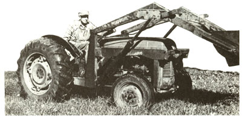

In the last issue, we took a long look at farm tractors for the small landowner-at how they work, what they can do, and how to select the right one for your needs. Now it's time to think about how you'll use your machine, and how you'll keep it in good running condition . . . and keep yourself in safe condition, as well. We'll start by considering some of the implements and attachments that you're most likely to need.
And you will need some implements, because a tractor by itself is not particularly useful. A plot of land with a bare tractor is analogous to a kitchen with a well-stocked pantry but no pots, pans, or utensils. Fortunately, though, the tractor itself is the most expensive and complicated component in the system, and if you've chosen a tractor-new or used-that's common in your area, you shouldn't have any trouble finding the right accompaniments for it. Here, without further ado, are some of the implements most likely to appear on your wish list.
Plows are described in terms of the number of furrows they leave in the soil with each pass. A plow with a single cutting blade is a one-bottom plow, one with a pair of them is a two-bottom plow (Fig. 1), and so on. The monstrous wheat-field tractors used in the wide open spaces of the Midwest can pull a ten-bottom plow without straining-but a small-farm machine, probably in the 30- horsepower range, is intended for use with a two- or possibly a three-bottom model. In heavy clay or rocky soil, the two bottom is a better bet, since it means less work for the engine.
There are many subtleties to plows and plowing, however, and I urge you to seek some advice from your neighbors, or perhaps from the county agricultural agent, before buying one. These individuals probably know more about local conditions than you do, and can help you make an informed choice. You can expect to spend around $150 for a used twobottom plow in good condition (new ones range from $350 to $800). And if you're using a midsize tractor like I suggested, be sure to get a plow to fit a Category 1 three-point hitch. (Category 2 implements, by contrast, are for large tractors, while Category 0 implements fit compact or lawn-and-garden machines.)
Disc harrows are used to eliminate the lumps and clods left in the field after plowing. The tandem type illustrated in Fig. 2 is probably what you'll want. Note that it consists of four separate gangs of discs-two in the front and two in the rear. The positions of the gangs can be adjusted relative to one another. In the closed position (Fig. 2), the discs will slice deeply into the soil without displacing it very much. Switching them to the open position (Fig. 3) after going over the field with them closed allows the discs to chop up the previously loosened soil, leaving a relatively fine seedbed.
Don't buy a bigger set of disc harrows than your tractor can handle. For a 25- to 30-horsepower machine, an 8-foot wide tandem harrow is the practical maximum. Most harrows in that size range will be fitted with 18" discs, either plain or notched (Fig. 4). The notched ones are somewhat more efficient at chopping up sod or stubble, but are more easily damaged when run up against a big stone. A replacement disc of either style costs eight or nine dollars.
When examining used harrows, check all the discs for damage, and also make sure that each gang turns freely-but without excessive play in the bearings. Very large harrows are often equipped with ball or roller bearings, but the ones you'll be looking at will probablv turn on cast-iron sleeve bearings or simple hardwood bushings. (Both are acceptable, although the iron bearings will last longer.) In any case, each bearing-unless it is sealed-should be equipped with its own grease fitting. A serviceable used disc harrow will probably cost you between $150 and $250 ($600 and $1,200 new).
Spike-tooth harrows, sometimes called smoothing harrows, are used after disc harrows when an even finer seedbed is required (Fig. 5). They're ordinarily connected directly to the frame of the disc harrows and drawn across the field behind them, thereby eliminating the need for an extra soil-compacting trip over the field. Because spike-tooth harrows are not linked to the three-point hitch, the depth of their bite is not regulated by the tractor's hydraulic draft control, but by a ratcheting lever on the harrows themselves. If you decide that you need a set, you shouldn't have to pay more than $100 for a used one ($300 to $400 new).
A cruder, but absolutely free, smoothing harrow can be improvised by dragging a set or two of discarded steel-framed bedsprings-which you can probably find at the dumpbehind the disc harrows (Fig. 6).
Rotary tillers hook up to your tractor's three-point linkage and are powered by its PTO shaft. Like walk-behind tillers, they pulverize the soil and leave it ready for planting in a single pass-in effect combining the operations of plow, disc harrows, and smoothing harrows. Various sizes are available, but a medium-sized tractor shouldn't be expected to handle one any wider than four feet-and if you plan on chewing up any sod ground, a three-footer is a better choice. Since the space between your tractor's rear wheels is likely to be greater than that, look for a tiller that can be mounted in an offset position (Fig. 7), to prevent the tractor tires from leaving tracks in the freshly tilled ground at each pass over the field.
Rotary tillers are expensive-$600 to $750 used, and double that when new-and the tractormounted units are not as versatile as walk-behind tillers. Come midsummer, for example, you'll have a hard time maneuvering a tractor into the middle of the garden to prepare a few small beds for second plantings of broccoli-a task that's easily handled with a walkbehind type. Still, if you plant a very large garden or plan to do any commercial gardening, the tractor-mounted tiller may be a worthwhile investment. The same quarter-acre piece that would take all day to work up with a walk-behind tiller can be disposed of in an hour with a tractor-powered one. A rotary tiller is also a potential money-maker in the spring, when you may be able to find work preparing home gardens in your area.
Scraper blades (Fig. 8) are ordinarily mounted behind the tractor, although front-mounted blades are available for some makes and models. They're most often used for plowing snow, although they also work well for scraping and smoothing gravel roads or driveways. If you reverse the blade, the implement can be used to backfill holes or trenches . . . if not too much soil needs to be moved at once. When buying a scraper blade, look for one with a replaceable carbon-steel wear strip where the edge of the blade meets the ground. A new six-foot scraper blade goes for around $200, while a used one can often be had for half that price.
Logging winches for farm tractors have become common in this country only within the past few years, but in Scandinavia, where most of them are manufactured, they've been in general use for decades. The winch fits in the three-point hitch, as shown in Fig. 9, and is driven by the PTO shaft. With the winch in place, the tractor is taken to within the cable's length-typically 120 to 200 feet-of the felled trees that are to be skidded out of the woodlot. The cable is pulled out by hand and the logs are fastened to it with short choker chains and special sliding fittings. The logs are then winched in, lifted at the tractor end, and dragged off to the yarding area.
Although a winch is costly-it goes for $1,200 to $1,600 new and is a recent enough development to be scarce on the used market-it's a superb tool for the woodlot owner who wants to do some selective cutting with a minimum of damage to the residual stand. And if it enables you to harvest timber that would otherwise simply fall down and rot, the winch can pay for itself with gratifying speed.
Some aspects of operating a tractor are easily learned by experience. When you first use a disc harrow, for instance, you may have trouble getting it to bite into the soil evenly-but with practice, you'll soon learn to manage the hydraulic draft control to best advantage. Lower it too far, and you'll find that the harrow leans forward and rides on the front gangs alone, the rear ones lifting free of the soil and doing no work. Don't lower it far enough, and the discs will merely scuff the surface of the soil, rather than slicing deeply into it as they should. Common sense, a willingness to ask questions of those with more experience than yourself, and a certain amount of trial and error will teach you most of what you need to know in short order-and teach it to you more effectively than anything you're likely to read.
Safety is another story. A trial-and-error approach here is lunacy, because the consequences of a single error can be so grave that you'll never have a chance to learn what you did wrong. Some of the hazards involved in operating a tractor, of course, are the same as those that go with handling any motor vehicle. Others, however, are less obvious and deserve special mention.
Foremost among those is the danger of a rollover-of turning the tractor over backwards, wheelie-fashion, or flipping it onto its side. Either will probably kill you, and a glance at any farm tractor immediately tells you why. When it goes over, there's nowhere to hide, and no sheltering roof to hit the ground before your head does. (Virtually all new tractors can be ordered with an integral roll bar-Fig. 10-but these guards are not often found on older models.)
A rear rollover sometimes occurs when the tractor's drive wheels freeze solidly in muddy ground during a cold snap. When that happens and the operator tries to free them by yanking back on the throttle, there are only two possible outcomes. The first is that the wheels will break free of the bond holding them to the ground. But if they don't break free, the tractor will pivot around the immobile wheels, rather than the other way around (Fig. 11). That can happen with almost unbelievable speed. Tests have shown that the point of no return can be reached in as little as three-fourths of a second, with the top of the tractor crunching into the soil three-fourths of a second after that.
That can be avoided, however, by one simple precaution. If you suspect that there's the slightest chance of your wheels being frozen in, try moving the tractor in reverse, since it's impossible for a rollover to take place in that direction. If it won't budge, you may be stuck until the weather warms up-frustrated, perhaps, but unhurt.
Rear rollovers can also take place if the rear wheels are so heavily loaded that it's easier for the front end to come up than for the wheels to spin. That's most likely to happen when the drawbar is in too high a position and chained to a rock, a log, a stump, or some other heavy weight-but it can also happen with nothing more than a set of harrows in the hitch, given an uphill direction of travel, too much throttle, and too fast a release of the clutch. No matter what's fastened to the tractor-and even if nothing is-make a habit of releasing the clutch slowly and carefully when you start moving, and be prepared to push it in again at any sign of the front wheels lifting off the ground. A set of front-end weights (Fig. 12) will help keep the wheels downmaking for more positive steering, as well as increased safety-and are well worth using if you habitually pull or drag heavy loads, as when working with a logging winch.
Sideways rollovers almost always result from venturing onto too steep a sidehill, or allowing the wheels on one side to drop into a ditch or hole. The solution is simply to use your head and watch where you're going. A tractor is considerably less steady on its feet when moving sideways along a slope than when traveling straight down or straight up oneand that makes it imperative that you consider the path ahead from all angles before committing yourself. For example, don't try to drive straight down a slope you wouldn't dare cross-because you may slip sideways and suddenly find yourself in big trouble.
As I mentioned earlier, roll bars (or cages) for older tractors can be difficult to come by, but if you'll be working in steep or uneven terrain, it's well worth trying to find one. For logging, in particular, rollover protection is almost mandatory. If a search fails to turn up a ready-made roll cage or bar, a neighbor or farm-equipment dealer may be able to steer you to an expert welder who can make one to fit your machine.
Another hazard is the whirling PTO shaft used when a tractor is operated in conjunction with a powered implement-whether a movable one, such as a manure spreader, or a stationary one, such as a forage blower. Most PTO shafts turn at a speed of about 540 RPM, with an energy output, for the sort of tractor we're talking about, of around 30 horsepower. Consider what can happen if you should reach down to check one of the linch pins on the three-point hitch and the sleeve of your floppy old wool sweater-the one you keep meaning to throw away-momentarily brushes against the whirling shaft.
If the shaft happens to bring the fabric around for one full turn-perhaps because a loose flake of paint lightly snags the wool fibers-the part that first made contact with the shaft will be whipped under more fabric about one second later. A few seconds after that, the shaft will have wound in enough sweater to begin dragging you through the ten-inch-wide space between the PTO shaft and the tractor lift arm, with grisly results better imagined than described.
That may frighten you, and it should. If you're properly alarmed, you'll give that turning PTO shaft the wide berth it demands, and live to a ripe old age. The fact that every PTO shaft you use should be equipped with a tubular plastic safety shield (Fig. 13) should not temper your respect for it even slightly-any more than you would be careless in handling a loaded gun because the safety was on.
You need two kinds of tools to keep your tractor running well. If you don't already own a set of mechanic's tools (that's the first kind) when you pick up your tractor, buy some the same day. When you're already investing a considerable sum in the tractor, an additional $100 won't seem like so much-and if you don't buy them right away, you'll end up buying them one by one later, as you need them . . . paying a much higher price in frustration, lost time, and probably dollars as well.
A good starter set consists of a 1/2" drive socket set with sockets ranging in size from 3/8" to 1-1/4", and a set of combination wrenches in the same size range. Add to that a few screwdrivers, an inexpensive set of feeler gauges, and a lever-operated grease gun, and you're in business.
The second type of tool is the kind you hold, not in your hand, but in your mind. Fortunately, the information necessary to maintain most tractors is both readily available and less expensive than wrenches and pliers. The place to start is by acquiring the shop manual for your tractor-a storehouse of useful data, including specifications, advice on routine maintenance, and detailed instructions on how to perform major repair jobs, such as installing new rings and valves and rebuilding worn hydraulic systems. If you purchase a new tractor, you'll probably be able to find the appropriate shop manual at a local dealer's. If you own a used machine, though, you might have to order your manual from Intertec Publishing Corp., 9221 Quivira Rd., Overland Park, KS 66215. (Be sure to state the make and model of the tractor.) At this writing, the price of each manual is $11.95, plus $1.25 for shipping and handling.
Before going any further in this vein, I should come out and admit that I'm not a particularly talented mechanic myself. Still, I manage to get by, and one of the ways I do that is by paying close attention to routine maintenance. Conscientious preventive maintenance is inexpensive and takes little time, yet it's the single best way to minimize wear and prevent expensive problems from occurring.
Service the air and oil filters at least as often as recommended by the manufacturer-usually every 100 operating hours-and drain the crankcase and install fresh oil with each filter change. If, as is fairly likely, you don't use your tractor for 100 hours each year (that's an average of about 20 minutes every day), service the filters annually anyway.
Every other month or so, take up your grease gun and pump some fresh grease into every fitting on the tractor. You'll find a fitting at each pivot point in the steering gear, in a couple of places on the three-point hitch, and at other wear points. Every two or three years, drain and replace the transmission, hydraulic, and differential fluids. And every now and then, when you're up near the front of the tractor, take a moment to inspect the fan beltwhich runs the generator-and make sure that it's tight and in good repair.
Most older tractors were originally equipped with 6-volt electrical systems, which tended to be short on cranking power, particularly in cold weather. Whatever you can do to keep such a tractor operating efficiently reduces the chances of your getting on it some damp, chilly morning and finding that it resolutely refuses to fire-something that's bound to happen right when some vital chore needs to be done. I may be spending more money than I need to, but each year I replace the spark plugs, plug wires, distributor cap, rotor, breaker points, and condenser. Would the tractor start just as reliably if I didn't? Possibly-but the $30 or so I fork out for ignition parts each year makes me feel a lot more confident when I reach for the starter button.
If you someday find yourself with a dead battery anyway, don't succumb to the temptation to stretch a set of jumper cables from the 6-volt battery in your tractor to the 12-volt battery in your car. That's a fine way to burn out the tractor's wiring harness by overloading it.
What if you press the starter button and the motor turns over strongly but the tractor will not start? Well, not every problem has a simple solution, but some do. Is the ignition switch turned to "ON"? It's easier to forget that than you might think. If they're honest, most tractor owners will probably admit to having vainly cranked a switched-off engine at one time or another, cursing bitterly as the battery wore down, and finally sheepishly realizing what the matter was. (A friend of mine who's a private pilot refers to that sort of problem as "a short between the headphones.")
The switch is turned on? In that case, one of two things is wrong: Either the cylinders are not getting fuel, or the spark plugs are not receiving enough current from the battery and ignition coil to ignite the mixture of air and fuel. (I'm simplifying. There are actually several other possibilities, but those two are the most likely and the easiest to test.) Try the gas first. Use the correct size wrench to unscrew the fuel line where it enters the carburetor; you should see a fine, steady stream of gasoline flowing from it. If you don't, add a few gallons of fuel to the tank-even though you can see gas in the tank, there may not be enough to reach the level of the outlet line-and look again. If you still don't see any gas flowing, you have a clogged fuel line, filter, or shutoff valve. Examine the system and repair the culprit.
If you find that gas is getting to the carburetor and the engine still won't start, check the spark plugs. Remove the wire from one of the plugs, unscrew the plug, and reconnect the wire to the plug. Now rest the metal base of the plug on the axle, steering rod, or some other heavy steel member (rub it back and forth a few times to be sure it's well grounded). Take your hands off it-if you don't, you'll soon get a sharp electric shock-and push the starter button (make sure the ignition switch is on!). You should see a strong blue spark leap across the gap of the spark plug (Fig. 14). If you don't see a spark, you have an electrical problem. In that case, check that the points are properly gapped, that the rotor and the inside of the distributor cap are clean and dry, and that the distributor cap is firmly fastened down. If the plugs still don't spark, it may be because the porcelain insulators are wet or dirty, either of which can temporarily short-circuit the plugs and prevent them from sparking (or allow them to spark only feebly). Wipe the exposed porcelain surfaces of the plugs, and if they are very wet or if the tractor has sat unused in damp weather for some time, remove them and dry them completely by putting them in a warm oven for half an hour.
Still no spark? My final suggestion is to take out the ignition coil and have it tested-and if that proves OK, the problem is a bad wire somewhere in the system, or possibly a defective ignition switch.
If you get a strong spark at the plugs and gas is getting to the carburetor but the engine refuses to start, there's probably a glitch in the carburetor itself. In order to give the carb a going-over, you'll need to shut off the fuel line at the tank and remove the carburetor from the tractor.
(Before doing that, some people like to give the cast-iron body of the carb a smart tap with a wrench and try the starter again. The tap is sometimes enough to jolt a stuck float valve loose again-at least temporarily. Another worth-a-try approach is to hold the palm of your hand over the carb's air intake, crank the starter for a few seconds, and jerk your hand away as you continue to push the starter button. Sometimes the sudden surge of air pressure that results from this maneuver is enough to blow out any deposits gumming up the carburetor's inner workings.)
Most tractor carburetors can be split into two halves, like a clamshell, by removing a few screws or bolts (Fig. 15). Disassemble the carburetor carefully, laying out the parts in an orderly fashion on a clean surface. Make sure the float-which, like the float in a toilet tank, shuts off the flow of incoming liquid when it reaches a certain level-is set to the specification given in the shop manual. Check that the float pivot, needle, and seat are free of gum deposits. A commercial carburetor cleaner-such as Gumout-should help clean any sticky parts. Also, examine the float itself to make sure that it hasn't turned into a sinker instead. Reassemble and reinstall the carb-in theory, you should install new gaskets whenever you take the carburetor apart, but I've often reused them without ill effects-and try the starter again.
Still nothing? You've checked all the obvious trouble spots, and it's time to call in someone who knows more than either of us. That's an honorable solution, too, and a good way to learn something new. The chances are, though, that you'll seldom find yourself in that situation. If you select the right tractor in the first place and care for it faithfully, it will serve you well. I wish you a long, happy, and safe life together.
|
STAFF PHOTO |
 |
|